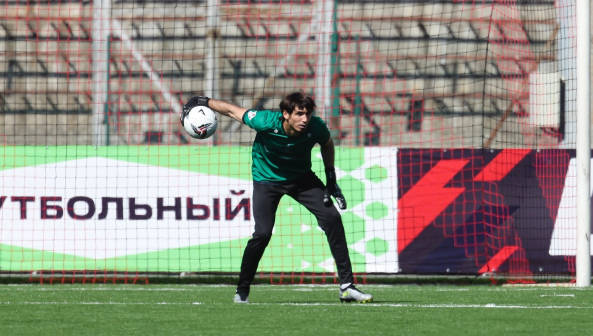
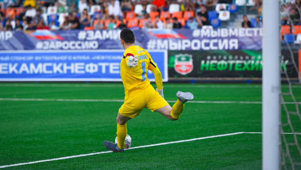
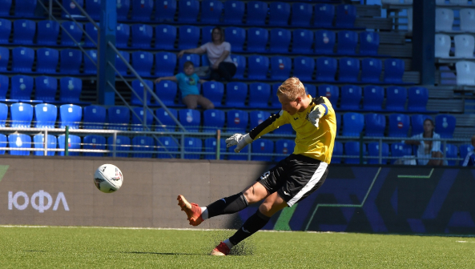

Отзывы и подробные обзоры.
поделитесь и вы своими впечатлениями о нашем товаре.
-
ФК “Амкар пермь”ГолкиперХазбулат Хамхоев:
Я купил вратарские перчатки несколько недель назад и полностью доволен своей покупкой. Качество перчаток очень хорошее, они очень прочные и хорошо сидят на руках. Они также обеспечивают отличное сцепление с мячом, что дает мне больше уверенности в защите ворот. Перчатки также довольно удобные для ношения. Они не оказывают лишнего давления на руки и довольно легкие. Застежки на запястьях обеспечивают хорошую посадку и фиксацию перчаток на месте. Кроме того, перчатки легко моются и очень быстро сохнут, что делает их удобными для использования на тренировках и матчах. Главное, что мне нравится в этих перчатках, это их надежность. Я не боюсь, что они разорвутся или сломаются в середине матча. Я уверен, что они прослужат мне долго и надежно. В целом, я очень доволен своей покупкой вратарских перчаток. Они являются отличным выбором для любого вратаря, кто ищет надежные и качественные перчатки.
-
ФК “Нефтехимик”ГолкиперАндрей голубев:
Вратарские перчатки - это важная часть экипировки голкипера, и я имел возможность опробовать несколько различных моделей на протяжении моей карьеры. Один из лучших опытов, которые у меня были, был с последней парой, которую я приобрел BE ONE SNOW. Первое, что я заметил, это качество материала перчаток. Они выполнены из прочной, но гибкой кожи, которая хорошо адаптируется к форме моей руки. Они также имеют дополнительные защитные элементы на костяшках пальцев и ладони, что дает мне больше уверенности при схватывании мяча и отразит его движение. Еще одна вещь, которая мне нравится, это дизайн перчаток. Они имеют элегантный и стильный вид, что добавляет профессиональности моему образу на поле. Цветовые схемы и детали помогают выделиться среди остальных игроков. Важным моментом является также посадка перчаток на руку. Они должны быть достаточно плотными, чтобы обеспечить наилучший контроль за мячом, но при этом не ограничивать движения рук. Моя пара перчаток идеально подходит моим рукам и позволяет мне чувствовать мяч и контролировать его траекторию. Cпасибо большое!
-
Центр Подготовки Футболистов "Крылья Советов"ГолкиперАрсений осадчий:
Длительность носки перчаток - это также важно для меня, поскольку я играю вратарем на профессиональном уровне. Я приобрёл перчатки BE ONE SSO WHITE. Очень износостойкие и доволен своими вратарскими перчатками. Они отлично подходят моим потребностям вратаря и обеспечивают мне комфорт, защиту и контроль. Я рекомендовал бы эту модель голкиперам, которые ищут надежные и удобные перчатки для своей игры. Перчатки снимают боль и предотвращают повреждения пальцев и суставов при отбивании мощных ударов. Также они предотвращают образование мозолей и вызывают ощущение комфорта даже после длительных тренировок. Очень важным аспектом перчаток для меня является их фиксация на руке. Ведь нет ничего хуже, чем во время матча или тренировки чувствовать, что перчатка начинает сползать или отходить от руки. Благодаря хорошей фиксации, я могу сосредоточиться на игре и не беспокоиться о том, что перчатка может сорваться в неподходящий момент.